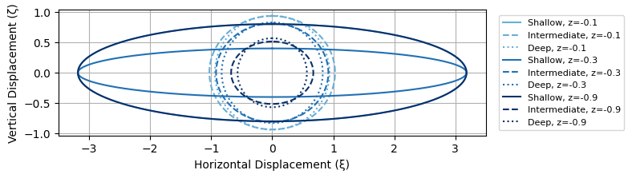

import numpy as np
import matplotlib.pyplot as plt
# Parameters
a = 1 # wave amplitude
lambda_wave = 10 # wavelength
k = 2 * np.pi / lambda_wave # wave number
omega = 2 * np.pi / 5 # wave frequency
t = np.linspace(0, 2 * np.pi / omega, 400) # time
# Depths to evaluate
z_vals = [-0.1, -0.3, -0.9]
# Water depths for regimes
H_shallow = 0.5
H_intermediate = 2.5
H_deep = 50
colors = plt.cm.Blues(np.linspace(0.5, 1.0, len(z_vals)))
# Orbit functions
def shallow_orbit(z, H, a, k, omega, t):
xi = -a / (k * H) * np.sin(omega * t)
zeta = a * (1 + z / H) * np.cos(omega * t)
return xi, zeta
def intermediate_orbit(z, H, a, k, omega, t):
sinh_kH = np.sinh(k * H)
xi = -a * np.cosh(k * (z + H)) / sinh_kH * np.sin(omega * t)
zeta = a * np.sinh(k * (z + H)) / sinh_kH * np.cos(omega * t)
return xi, zeta
def deep_orbit(z, a, k, omega, t):
factor = np.exp(k * z)
xi = -a * factor * np.sin(omega * t)
zeta = a * factor * np.cos(omega * t)
return xi, zeta
fig, ax = plt.subplots(figsize=(8, 6))
for i, z in enumerate(z_vals):
xi_s, zeta_s = shallow_orbit(z, H_shallow, a, k, omega, t)
xi_i, zeta_i = intermediate_orbit(z, H_intermediate, a, k, omega, t)
xi_d, zeta_d = deep_orbit(z, a, k, omega, t)
ax.plot(xi_s, zeta_s, color=colors[i], label=f'Shallow, z={z}')
ax.plot(xi_i, zeta_i, '--', color=colors[i], label=f'Intermediate, z={z}')
ax.plot(xi_d, zeta_d, ':', color=colors[i], label=f'Deep, z={z}')
ax.set_xlabel("Horizontal Displacement (ξ)")
ax.set_ylabel("Vertical Displacement (ζ)")
ax.set_aspect('equal')
ax.grid(True)
ax.legend(fontsize=8, loc='center left', bbox_to_anchor=(1.02, 0.5))
plt.tight_layout()
plt.show()
◀ ▶